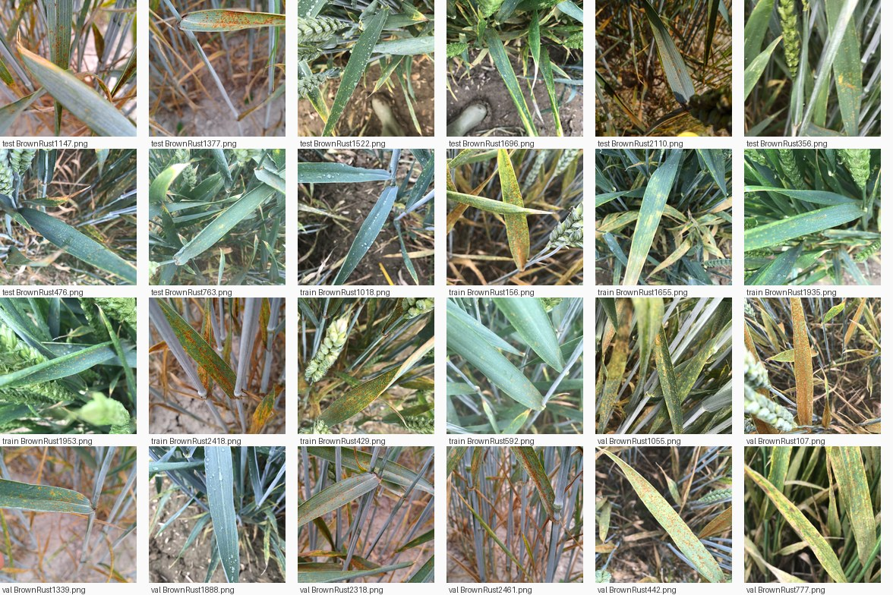
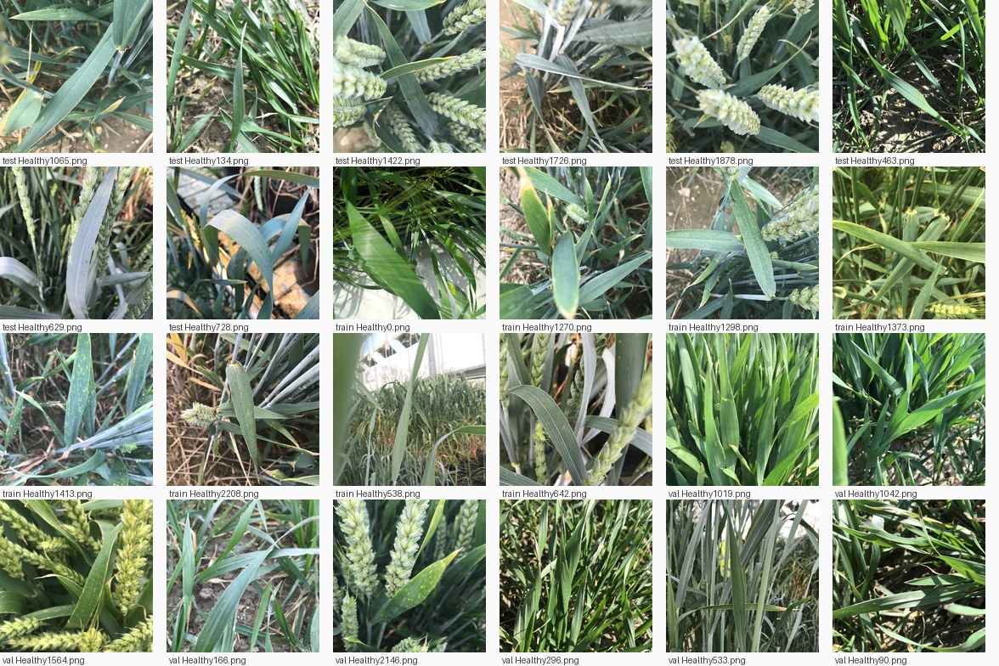
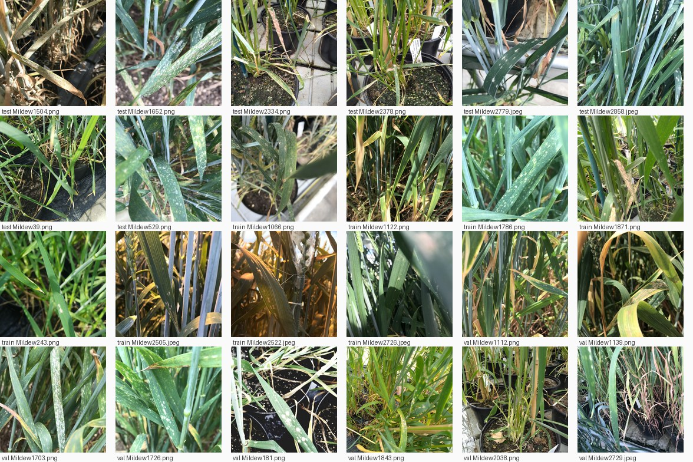
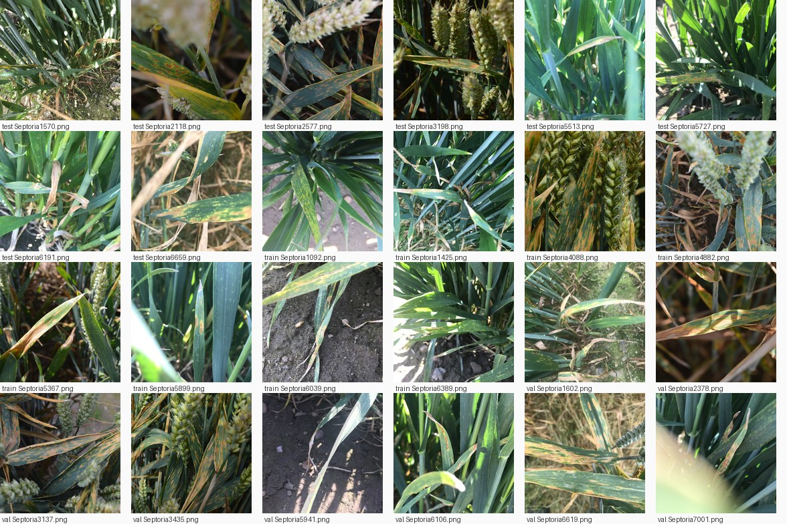
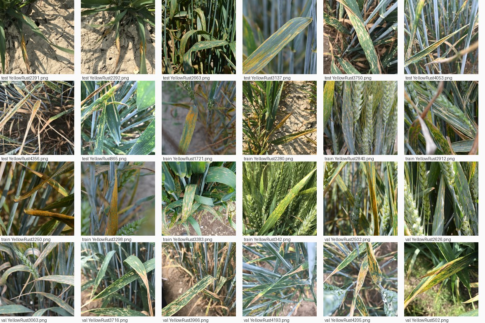

| Класс | Название | Всего | train | val | test |
|---|---|---|---|---|---|
| brown_rust | Бурая ржавчина | 128 | 90 | 19 | 19 |
| healthy | Здоровое растение | 122 | 86 | 18 | 18 |
| mildew | Мучнистая роса | 161 | 113 | 24 | 24 |
| septoria | Септориоз | 348 | 244 | 52 | 52 |
| yellow_rust | Жёлтая ржавчина | 239 | 167 | 36 | 36 |
Под каждой миниатюрой — выборка и имя файла. Ищем: чужой класс в сетке, кадры без листа, сильный пересвет или смаз.





| Удалён | Тип | Оставлен вместо него | dHash-расстояние |
|---|---|---|---|
| data/raw/extracted/Septoria1093.png | near | data/raw/extracted/Septoria1092.png | 1 |